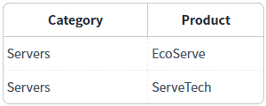
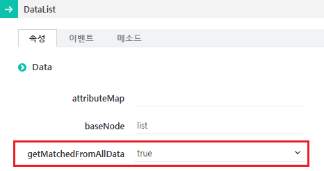

DataList의 'getMatchedFromAllData' 속성을 사용하여 필터가 적용된 데이터에서 데이터를 검색할지, 원본 데이터에서 데이터를 검색할지를 설정한 예제입니다.
이 속성은 DataList의 데이터 검색 메소드가 동작할 때 사용됩니다. 속성의 설정 값과 설명은 다음과 같습니다.
true : DataList의 데이터 검색 메소드가 동작할 때 필터가 적용되지 않은 원본 데이터를 대상으로 검색합니다.
false : (기본 설정 값) DataList의 데이터 검색 메소드가 동작할 때 필터가 적용된 데이터를 대상으로 검색합니다.
DataList의 주요 데이터 검색 메소드는 'getMatched' 또는 'getUnmatched'로 시작되는 메소드입니다.
주요 메소드 목록은 다음과 같습니다.
getMatchedArray
getMatchedData
getMatchedIndex
getMatchedJSON
getMatchedXML
getMatchedColumnData
getUnmatchedArray
getUnmatchedColumnData
getUnmatchedData
getUnmatchedIndex
getUnmatchedJSON
getUnmatchedXML
필터가 적용된 데이터에서 검색하기 - JSON 데이터 받기
필터가 적용된 데이터에서 검색하기 - Row Index 받기
원본 데이터에서 검색하기 - JSON 데이터 받기
원본 데이터에서 검색하기 - Row Index 받기
각 버튼을 클릭하여 반환되는 데이터 형식을 확인할 수 있습니다.
버튼을 클릭하고 '로그 확인'에 출력된 로그를 확인합니다.
(브라우저의 개발자 도구 콘솔에도 로그가 출력되며, 객체 형식으로 확인할 수 있습니다.)
1
STEP 1: 초기 상태를 확인합니다.
DataList에 할당된 데이터입니다. 각 컬럼에 연결된 JSON 데이터의 KEY는 다음과 같습니다. - product : Product - category : Category
Example 1.DataList에 할당된 JSON 형식의 데이터
[
{ "category": "Networking", "product": "SpeedLink" },
{ "category": "Servers", "product": "EcoServe" },
{ "category": "Networking", "product": "LinkSecure" },
{ "category": "Servers", "product": "ServeTech" }
]화면 로딩 후 DataList 컬럼 'category'의 값이 'Servers'과 일치하는 데이터만 출력되도록 필터가 적용되었습니다.
Image 1.브라우저(Chrome) 실행 예시

2
STEP 2: 'Category' 컬럼의 값이 'Networking'과 일치하는 데이터를 JSON 형식으로 받기
"1.1 'Category' 컬럼의 값이 'Networking'과 일치하는 데이터를 JSON 형식으로 받기" 버튼을 클릭합니다.3
STEP 3: 실행된 결과를 확인합니다.
필터가 적용된 데이터에 'Category' 컬럼의 값이 'Networking'과 일치하는 데이터가 없으므로 빈 배열이 반환됩니다.
Example 2.Log
[13:48:02] # DatList의 'getMatchedFromAllData' 속성의 설정 값: "false" [13:48:02] 메소드 getMatchedJSON 호출 값 : []
각 버튼을 클릭하여 반환되는 데이터 형식을 확인할 수 있습니다.
버튼을 클릭하고 '로그 확인'에 출력된 로그를 확인합니다.
(브라우저의 개발자 도구 콘솔에도 로그가 출력되며, 객체 형식으로 확인할 수 있습니다.)
1
STEP 1: DataList에 할당된 데이터를 확인합니다.
각 컬럼에 연결된 JSON 데이터의 KEY는 다음과 같습니다. - product : Product - category : Category
Example 3.DataList에 할당된 JSON 형식의 데이터
[
{ "category": "Networking", "product": "SpeedLink" },
{ "category": "Servers", "product": "EcoServe" },
{ "category": "Networking", "product": "LinkSecure" },
{ "category": "Servers", "product": "ServeTech" }
]화면 로딩 후 DataList 컬럼 'category'의 값이 'Servers'과 일치하는 데이터만 출력되도록 필터가 적용되었습니다.
Image 2.브라우저(Chrome) 실행 예시
2
STEP 2: 'Category' 컬럼의 값이 'Servers'과 일치하는 데이터의 Row Index 받기
"1.2 'Category' 컬럼의 값이 'Servers'과 일치하는 데이터의 Row Index 받기" 버튼을 클릭합니다.3
STEP 3: 실행된 결과를 확인합니다.
필터가 적용된 데이터를 기준으로 행의 인덱스가 반환됩니다.
Example 4.Log
[13:48:33] # DatList의 'getMatchedFromAllData' 속성의 설정 값: "false" [13:48:33] 메소드 getMatchedIndex 호출 값 : [0,1]
각 버튼을 클릭하여 반환되는 데이터 형식을 확인할 수 있습니다.
버튼을 클릭하고 '로그 확인'에 출력된 로그를 확인합니다.
(브라우저의 개발자 도구 콘솔에도 로그가 출력되며, 객체 형식으로 확인할 수 있습니다.)
1
STEP 1: DataList에 할당된 데이터를 확인합니다.
각 컬럼에 연결된 JSON 데이터의 KEY는 다음과 같습니다. - product : Product - category : Category
Example 5.DataList에 할당된 JSON 형식의 데이터
[
{ "category": "Networking", "product": "SpeedLink" },
{ "category": "Servers", "product": "EcoServe" },
{ "category": "Networking", "product": "LinkSecure" },
{ "category": "Servers", "product": "ServeTech" }
]화면 로딩 후 DataList 컬럼 'category'의 값이 'Servers'과 일치하는 데이터만 출력되도록 필터가 적용되었습니다.
Image 3.브라우저(Chrome) 실행 예시
화면 로딩 후 DataList 컬럼 'category'의 값이 'Servers'과 일치하는 데이터만 출력되도록 필터가 적용되었습니다.
2
STEP 2: 'Category' 컬럼의 값이 'Networking'과 일치하는 데이터를 JSON 형식으로 받기
"2.1 'Category' 컬럼의 값이 'Networking'과 일치하는 데이터를 JSON 형식으로 받기" 버튼을 클릭합니다.3
STEP 3: 실행된 결과를 확인합니다.
원본 데이터를 대상으로 'Category' 컬럼의 값이 'Networking'과 일치하는 데이터가 반환됩니다.
Example 6.Log
[13:49:02] # DatList의 'getMatchedFromAllData' 속성의 설정 값: "true"
[13:49:02] 메소드 getMatchedJSON 호출 값 :
[{"category":"Networking","product":"SpeedLink","rowStatus":"R"},{"category":"Networking","product":"LinkSecure","rowStatus":"R"}]각 버튼을 클릭하여 반환되는 데이터 형식을 확인할 수 있습니다.
버튼을 클릭하고 '로그 확인'에 출력된 로그를 확인합니다.
(브라우저의 개발자 도구 콘솔에도 로그가 출력되며, 객체 형식으로 확인할 수 있습니다.)
1
STEP 1: DataList에 할당된 데이터를 확인합니다.
각 컬럼에 연결된 JSON 데이터의 KEY는 다음과 같습니다. - product : Product - category : Category
Example 7.DataList에 할당된 JSON 형식의 데이터
[
{ "category": "Networking", "product": "SpeedLink" },
{ "category": "Servers", "product": "EcoServe" },
{ "category": "Networking", "product": "LinkSecure" },
{ "category": "Servers", "product": "ServeTech" }
]화면 로딩 후 DataList 컬럼 'category'의 값이 'Servers'과 일치하는 데이터만 출력되도록 필터가 적용되었습니다.
Image 4.브라우저(Chrome) 실행 예시
화면 로딩 후 DataList 컬럼 'category'의 값이 'Servers'과 일치하는 데이터만 출력되도록 필터가 적용되었습니다.
2
STEP 2: 'Category' 컬럼의 값이 'Servers'과 일치하는 데이터의 Row Index 받기
"2.2 'Category' 컬럼의 값이 'Servers'과 일치하는 데이터의 Row Index 받기" 버튼을 클릭합니다.3
STEP 3: 실행된 결과를 확인합니다.
원본 데이터를 기준으로 행의 인덱스가 반환됩니다.
Example 8.Log
[13:49:25] # DatList의 'getMatchedFromAllData' 속성의 설정 값: "true" [13:49:25] 메소드 getMatchedIndex 호출 값 : [1,3]
1
STEP 1: DataList의 속성을 정의합니다.
[필수] getMatchedFromAllData="true"
(옵션 설명)
- true : DataList의 데이터 검색 메소드가 동작할 때 필터가 적용되지 않은 원본 데이터를 대상으로 검색합니다.
- false : (기본 설정 값) DataList의 데이터 검색 메소드가 동작할 때 필터가 적용된 데이터를 대상으로 검색합니다.
Image 5.웹스퀘어 스튜디오의 DataList 속성 설정 예시

Example 9.Source
<w2:dataList getMatchedFromAllData="true" id="dlt_exam_2" baseNode="list" repeatNode="map"> <!-- 중략 --> </w2:dataList>
getMatchedFromAllData